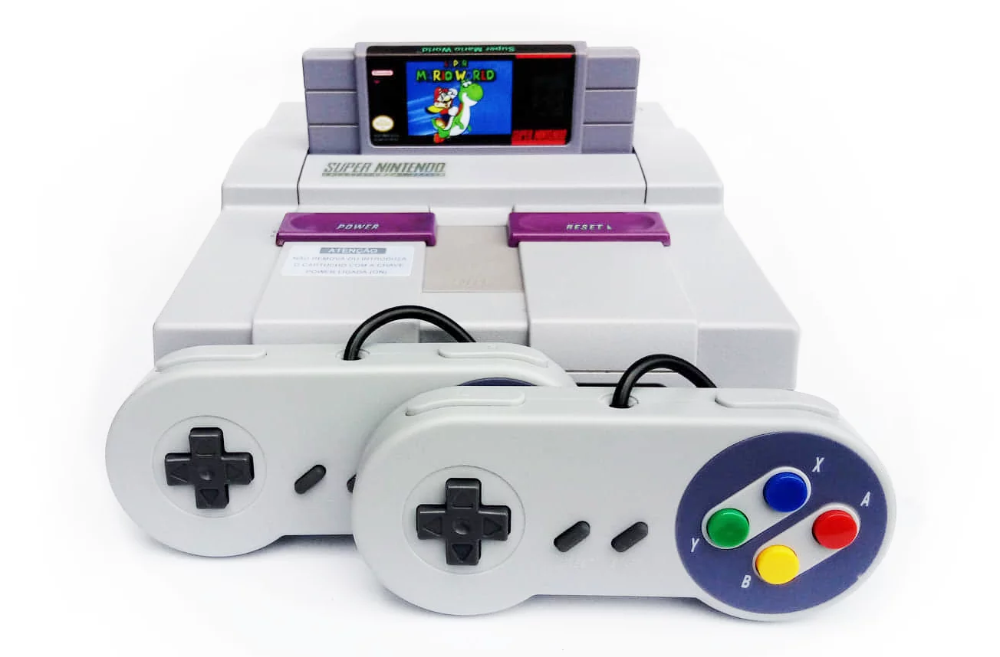

Historia
A história da Nintendo começa em 23 de setembro de 1889, quando Fusajiro Yamauchi fundou a empresa com o nome Nintendo Koppai para produzir Hanafuda, um tipo de jogo de cartas que acabou ficando popular no Japão. ... Ltd. para aumentar a circulação das novas cartas da empresa, especialmente as do tipo ocidental.

home